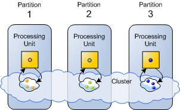
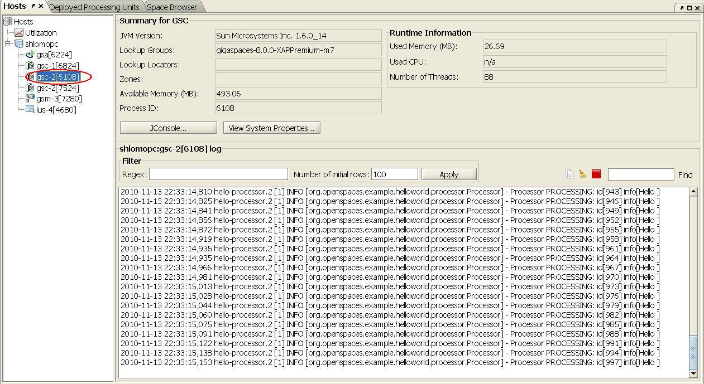
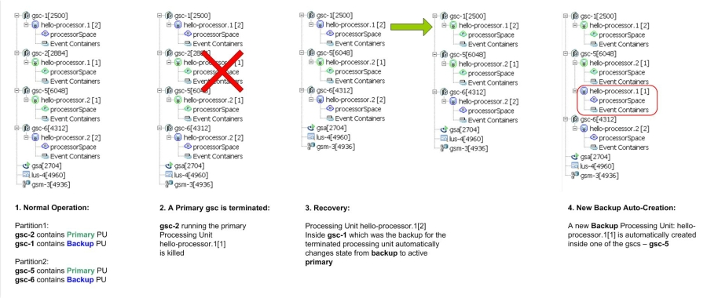

Tutorial summary: Learn how to scale the Hello World Application. Approx 10 min
Overview
 Example Folder - <GigaSpaces Root>\examples\helloworld
Example Folder - <GigaSpaces Root>\examples\helloworld
 Features Introduced - Scaling, Partitioning, Routing, Routing Index.
Features Introduced - Scaling, Partitioning, Routing, Routing Index.
Before you begin
We recommend that you go through the following steps before starting this tutorial:
- Download GigaSpaces and Set Up Your Development Environment to work with GigaSpaces - this is needed for running the tutorial sample application.
- Step One - Using Processing Units for Scaling - a short introduction to what a Processing Unit is - Recommended.
- Step Two - Creating the Hello World Application - create and run a Processing Unit.
- Step Three - Deploying the Hello World onto the Service Grid - deploy the Processing Unit onto the Service Grid and monitor it at runtime.
Goals
Scale the Hello World application
Steps
- Understanding Scaling using Data Partitioning and Routing
- Starting the Service Grid Components
- Configuring the application to be partitioned over 3 instances
- Deploying the partitioned application
- Expected output
- Undeploying the 3-Instance Deployment
- Configuring scaling to be partitioned over 2 instances, with 1 backup each
- Deploying the partitioned application
- Expected output
- Testing Failover Recovery and Self-Healing
Application ComponentsThe Processing Unit we deploy onto the Service Grid is our Hello World Processor application from the previous steps. Reminder - a feeder application writes each Message object to the processor Processing Unit, which is in turn processed by the Processor class.
|
Infrastructure (Service Grid) ComponentsThe Service Grid is a set of containers (Grid Service Containers - GSCs) managed by one or more a managers (Grid Service Managers - GSMs).
|


Scaled-Out Deployment Layout
In this tutorial we scale the Hello World Processor we created in the the previous steps.
First we scale it to 3 instances (Figure 3), and then into 4 instances, divided into two primary instances and two backup instances (Figure 4).
|
|
|


 Jump ahead and run the sample application, in case you want to see the final result of the tutorial before we begin.
Jump ahead and run the sample application, in case you want to see the final result of the tutorial before we begin.
Understanding the Concept of Scaling, using Routing and Partitions
Scalability
Scalability is the ability to grow your application - i.e. increase its throughput, without changing code, and without sacrificing service levels (latency).
Linear scalability is the ability to grow as much as needed at fixed hardware/software unit per capacity unit: Adding X hardware unit = getting additional X throughput (again, without sacrificing service levels)- see Figure 5.
blank-line

Scaling Using Processing Units
When your application is modeled as a Processing Unit, scaling it is as simple as adding more Processing Unit instances. Since processing units are self sufficient in the sense that they do not depend on any external component, this means that by increasing the number of Processing Unit instances that are used to by your application, you linearly (and of course predictably) increase its throughput. For example, if 2 Processing Unit instances can process 10K operations per second, 3 instances will process 15K, 4 instances 20K, and so on - see Figure 6.

Figure 6. N machines hosting N Grid Service Containers: each Container runs a Processing Unit.
Partitioning and Routing
As mentioned earlier, scaling is done by making sure each Processing Unit instance runs independently of the other instances (you may recall the car wash analogy from step one of this tutorial. This is done by making sure that the data that is needed to perform a certain business operation, resides in the same Processing Unit instance that does the actual processing (this is called data affinity). This in turn guarantees two things - latency is kept at a fixed minimum, and is not related to the number of processing unit instances that are used by the application.
This is achieved by dividing the application data into partitions (each partition resides on a separate Processing Unit instance, in the form of a space), and intelligently distributing the data to these partitions. The business logic services deployed on each instance, operate only on the partition local to them, i.e. the one collocated in the same Processing Unit instance. This ensures extremely low latency, because data is kept in memory. It also ensures linear scalability when increasing the number of Processing Unit instances - see Figure 7 below.

Figure 7. 3 Processing Unit instances: each holds a different subset of the data, marked with different colors.
A client connecting to this system, views the space partitions in all of these instances, as a single virtual resource.
blank-line
Routing - Partitioning is implemented using a hash-based data routing mechanism. Each Processing Unit is running a separate partition. When a client interacts with the space cluster (reads or writes data), it is routed transparently to the correct partition. The routing mechanism is applied transparently on the client side by the space proxy.

Figure 8. Partitioning is implemented using a hash-based routing mechanism. Each object is transparently routed to the correct partition by the client side proxy.
blank-line
Routing Index - When writing an object to a cluster of Processing Units which contains multiple partitions, the routing of that object to a specific partition, is calculated based on the value of one of the object's properties. This property is designated using the @SpaceRouting annotation, and is referred to as the Routing Index.
| For details about scaling a running space cluster in runtime see the Dynamic Partitioning section. |
Walkthrough - the Routing Index applied to the Message Object
As you may recall from step 2 of this tutorial, the @SpaceRouting annotation decorates the getId() method of the Message object. This designates the id as the Routing Index of the Message object. It means that when a Message object is written to the partitioned space, the return value of this method determines the partition to which the Message is written. The calculation is very simple: the hashCode() method of the return value is called, and the result is used in a modulus calculation with the number of partitions. For example, if the result of the hashCode() method call is 30, and the number of partitions is 3, then 30%3 = 0, meaning the object will be sent to the first partition.
@SpaceRouting public Integer getId() { return id; }
Designating the Id property as the routing index for the Message object by annotating its getter method with the @SpaceRouting annotation (Message.java).
Let's Scale our Application!
Next, we show you how to start the service grid components, by starting a grid service manager and a grid service container on each of your machines. We then deploy the processing unit with multiple instances.
Starting the Service Grid Components and Scaling the Application
 Steps to deploy the application:
Steps to deploy the application:
Install GigaSpaces
 After going through the previous tutorial Step Two - Creating the Hello World Application, you should have GigaSpaces installed and the Hello World sample application environment set. If not, please download GigaSpaces and set up your development environment to work with GigaSpaces - this is needed to run the tutorial sample application.
After going through the previous tutorial Step Two - Creating the Hello World Application, you should have GigaSpaces installed and the Hello World sample application environment set. If not, please download GigaSpaces and set up your development environment to work with GigaSpaces - this is needed to run the tutorial sample application.
Starting the Service Grid Components
- Start GigaSpaces Management Center (GS-UI) by running <GigaSpaces Root>/bin/gs-ui.bat(.sh).
- Start a GigaSpaces Agent (GSA) by running <GigaSpaces Root>/bin/gs-agent.(sh/bat).
The GSA, by default, will start 2 local Grid Service Containers, and manage a global Grid Service Manager and a global Lookup Service.
What is a GigaSpaces Agent...blank-line
The GigaSpaces Agent
blank-line
The GigaSpaces Agent (GSA) acts as a process manager that can spawn and manage Service Grid processes (Operating System level processes) such as the Grid Service Manager (aka The GigaSpaces Manager), the Grid Service Container (aka The GigaSpaces Container), and Lookup Service.
blank-line
Hide details
blank-line
A new Grid Service Manager starts on your local machine, and its output can be viewed by clicking its name gsm-1 inside the Hosts tab.
A new Grid Service Containers start on your local machine, and its output can be viewed by clicking their names gsc-1/gsc-2 inside the Hosts tab.
The Grid Service Manger automatically detects the Grid Service Containers. Now we have a Service Grid with one manager and two containers up and running! - Start one more local Grid Service Container, by rigt-clicking gsa-1 in the Hosts tab and selecting Start GSC.
The Service Grid now has 3 Grid Service Containers.
(The Service Grid Components started here are local services, all running on your own machine. Naturally, in a production environment, you start them on separate machines, using the startup scripts that the product provides.)
blank-line
Deploying with 3 Processing Unit Instances
Configuring the application to be partitioned over 3 instances
- Edit the processor's pu.xml configuration file located under <GigaSpaces root>/examples/helloworld/processor/src/META-INF/spring folder.
- Uncomment, or add the following SLA bean definition, which contains the deployment configuration, to the pu.xml file:
<os-sla:sla cluster-schema="partitioned-sync2backup" number-of-instances="3" max-instances-per-vm="1"> </os-sla:sla>
- Build the processor Processing Unit by running <Example Root>/build.bat(.sh) dist.
This compiles the processor into a JAR file, ready for deployment located under <Example Root>/Processor/PU/hello-processor.jar.
Deploy the Hello World Processor as a partition of 3 instances
- Click the Deploy Processing Unit Button
 to open the Deployment Wizard dialog.
to open the Deployment Wizard dialog. - Click the Processing Unit field ... button to browse for the processing unit JAR file.
- Browse to the hello-processor.jar JAR file, located at <Example Root>/Processor/PU folder and select it.
- Click the Deploy button, to deploy and wait for the processing unit instances to be provisioned to the running Grid Service Containers.
blank-line
Running the Feeder
- Start the feeder by running <Example root>/build.bat(.sh) run-feeder
blank-line
Expected output
Our Service Grid consists of 3 Grid Service Containers(GSCs). The brackets contain the process id of the gsc, Each gsc contains a Processing Unit instance that stores and processes one third of the objects. The gsc-1,gsc-2 and gsc-5 in the Hosts tab in Figure 9 below show the output of each Processing Unit instance. Select one of them to see its expected output.

Undeploying the 3-Instance Deployment
Before deploying the application with a backup, we first undeploy the currently running configuration:
- In the Deployed Processing Unit*tab, under the *Processing Units tree, right click the hello-processor deployment and click Undeploy.
- Click Yes to approve.
Deploying with 2 Primary and 2 Backup Instances
Configuring scaling to be partitioned over 2 instances, with 1 backup each
- Edit the processor's pu.xml configuration file located under <GigaSpaces root>/examples/helloworld/processor/src/META-INF/spring folder.
- Uncomment, or add the following SLA bean definition, which contains the deployment configuration, to the pu.xml file (the number-of-backups sets the number of backups per instance):
<os-sla:sla cluster-schema="partitioned-sync2backup" number-of-instances="2" number-of-backups="1" max-instances-per-vm="1"> </os-sla:sla>
- Build the processor Processing Unit by running <Example Root>/build.bat(.sh) dist.
This compiles the processor into a JAR file, ready for deployment located under <Example Root>/Processor/PU/hello-processor.jar.
Deploy the Hello World Processor with 2 Primary and 2 Backup Instances
- Start one more local Grid Service Containers, by right-clicking gsa-1 in the Hosts tab and selecting Start GSC. The Service Grid should now have 4 Grid Service Containers.
- Click the Deploy Processing Unit Button to open the Deployment Wizard dialog.
- Click the Processing Unit field ... button to browse for the processing unit JAR file.
- Browse to the hello-processor.jar JAR file located at <Example Root>/Processor/PU folder and select it.
- Click the Deploy button, to deploy and wait for the processing unit instances to be provisioned to the running Grid Service Containers.
blank-line
Running the Feeder
- Start the feeder by running <Example root>/build.bat(.sh) run-feeder.
blank-line
Expected Output for the 2 Primary and 2 Backup Instances Deployment
Our Service Grid consists of 4 Grid Service Containers. When deploying the application, 2 primary instances and 2 backup instances (a total of 4 instances) are automatically provisioned among the 4 available Grid Service Containers.
The naming convention used for such deployments is: <Processing unit name>.PU.<partition ID> [<backup ID> (if relevant)]. Since the mode of a certain Processing Unit instance can change over time, you can determine whether it's actually in primary or backup mode by checking the mode of the space contained in it. This can be done by clicking the + sign to the left of the Processing Unit name, to view the space inside it. The icon represents a space in primary mode, and the icon represents a space in backup mode. When a Processing Unit instance contains an embedded space, its mode (primary/backup) is determined by that of the space.
In the GSC and GSC-1 tabs in the UI, you can see the Grid Service Containers hosting the primary Processing Units instances. We can see their outputs: each one processes its own subset of the objects.

blank-line
Testing Failover and Self-Healing
To test failover, you manually shutdown one of the Grid Service Containers that runs a primary instance. This simulates a failure in the system:
- To see the failover process in ation, prepare to click the Hosts root inside the Hosts tab after doing the following action: Locate one of the gsc that shows the processor output (select it in the hosts tab) - this indicates that this gsc is running a primary Processing Unit instance. Right-click the gsc in the hosts tab, choose Terminate from the pop-up menu and select yes to terminate the gsc.
- After doing the above, quickly select the hosts root in the hosts tab to see the failover process in action.
The backup instance of the primary you just shut down becomes the primary. Then a new Processing Unit instance instantiated in another container, itself becomes the backup of the new primary.

What's Next?
Congratulations! By now you should have implemented your first GigaSpaces application, introduced high availability to it and scaled it out.
Next, you can go Beyond the Basics, and explore GigaSpaces more Advanced Features, or return to the Quick Start Guide Home .